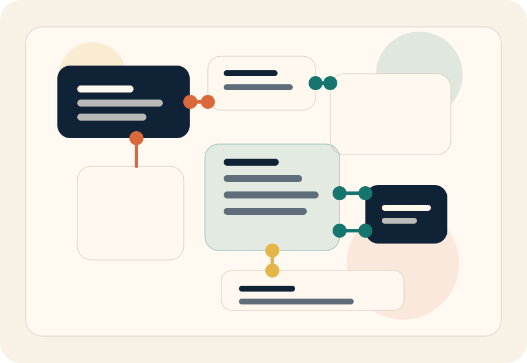

501(c)(3) direct-service nonprofit
createMPLS operates as a local nonprofit focused on direct youth programming through school and community partnerships.
createMPLS partners with schools and community organizations to bring robotics, coding, engineering, and project-based STEM learning to the places students already spend time. Programs are designed to stay free to students and families.

createMPLS operates as a local nonprofit focused on direct youth programming through school and community partnerships.
The work is shaped around actual schedules, shared spaces, and the practical barriers families and sites are already managing.
Programs focus on active problem-solving with real tools instead of one-time exposure or abstract talk about STEM.
Many students still have fewer chances to work with robotics, coding tools, engineering challenges, and other hands-on STEM experiences. The difference is often not interest or ability. It is whether those opportunities show up close enough, early enough, and consistently enough.
createMPLS responds by working through schools and community sites that already know their students. The goal is straightforward: bring practical STEM learning closer, lower the barriers that keep participation uneven, and make room for students to keep building.
If your site wants more hands-on STEM opportunities for students, the next step is a practical conversation about your schedule, your setting, and the kind of program that fits.
Share who you serve, the age range, the kind of setting you run, and what timing is realistic for your students.
Programs can fit into the school day, before or after school, summer learning, or other community-based youth programming.
Students get access to projects, tools, and guided instruction in a place they already know, without adding family cost.
Both offerings give students repeated chances to build, code, test ideas, solve problems together, and grow more comfortable with STEM tools.
Partner schools can bring createMPLS into the school day for structured, hands-on learning without asking students to find a separate entry point.
Learning labs create more room for exploration, mixed readiness levels, and project work in school and community-based youth settings.
The public case for createMPLS is simple: local partnership, youth-facing programming, and a delivery model that keeps participation free to students and families.
Schools, families, and supporters can find the basics easily because direct-service organizations should be straightforward about how they operate.
The site emphasizes student-facing programs in schools and community spaces rather than broad claims about systems or sectors.
Keeping programs free to students and families is part of the operating model, not a side note added after the fact.
Partnership comes first, but volunteers and donors also have clear paths into the work.
Start with a school or community partnership conversation about student ages, timing, and whether school-day or enrichment programming fits best.
Volunteers may help support student projects, classroom activities, events, or other moments where extra hands and real-world perspective are useful.
Giving supports the student-facing costs of delivery, including materials, equipment, and the practical work required to keep access open.
The contact page is set up to route partnership inquiries first, while still giving volunteers, donors, and sponsors a clear way in.